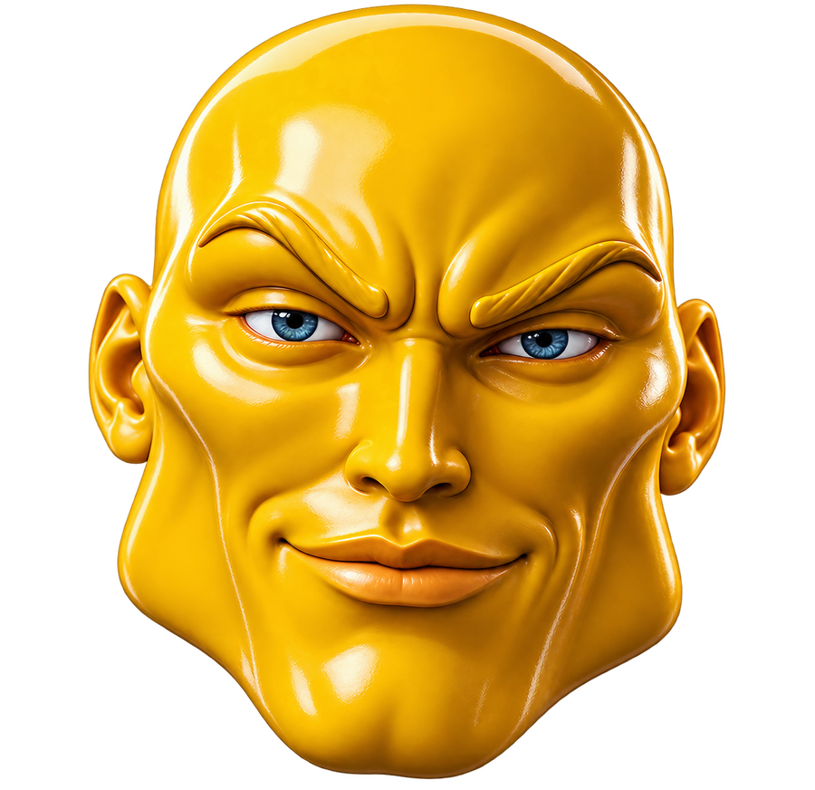
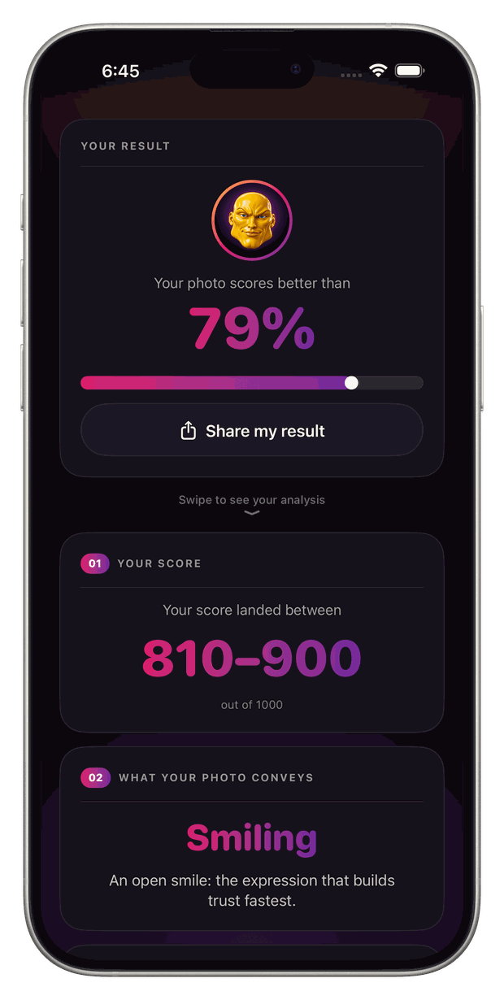
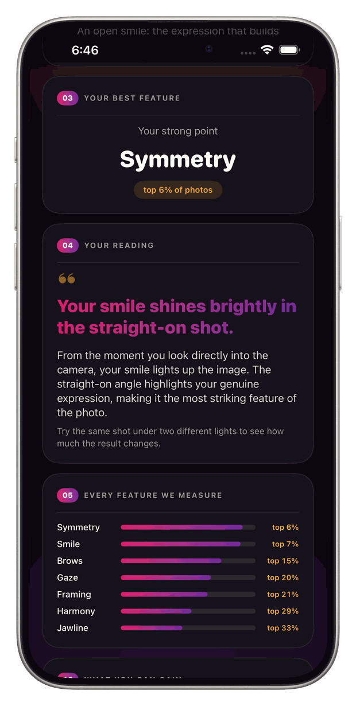
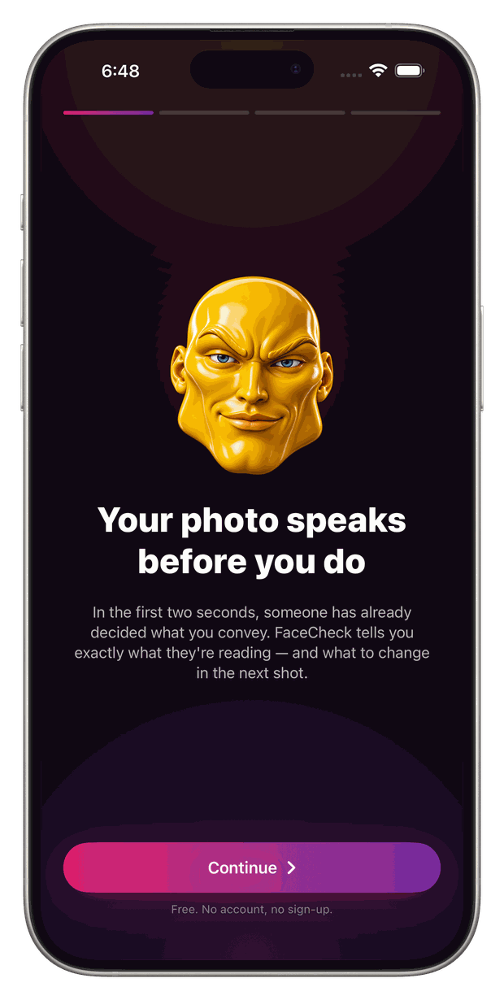
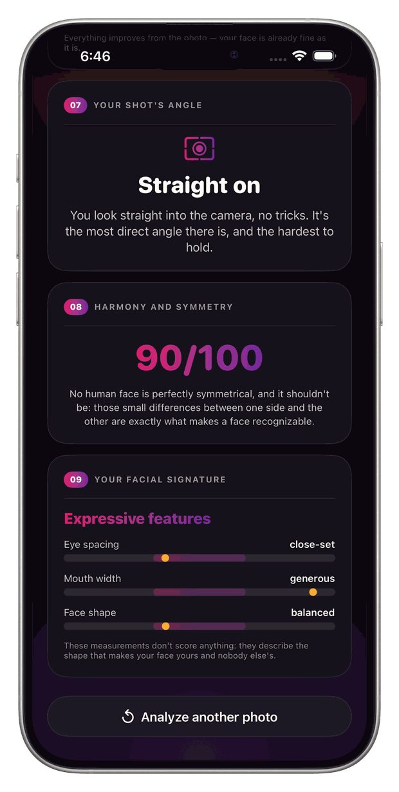
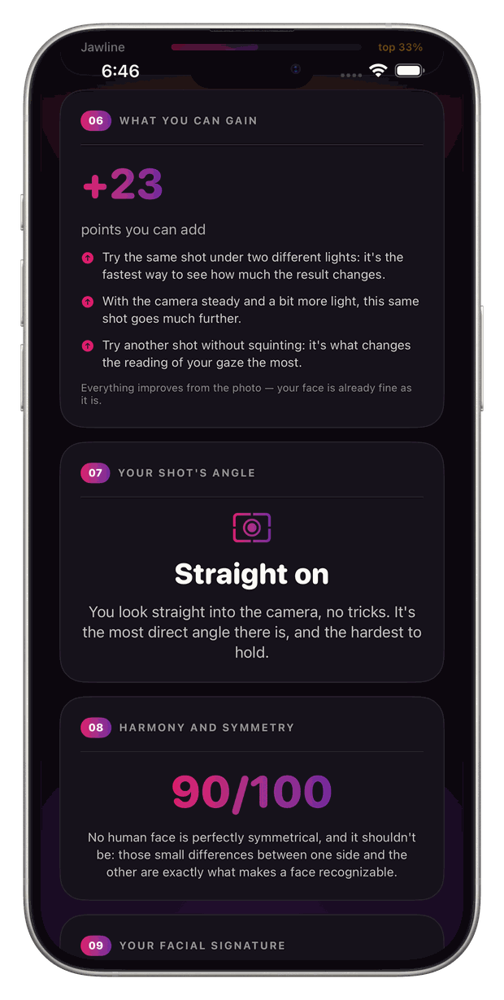
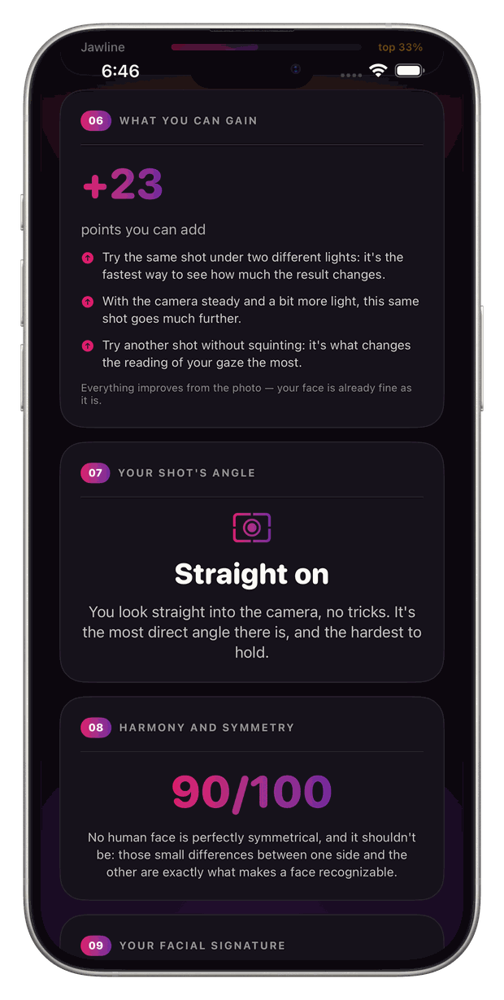
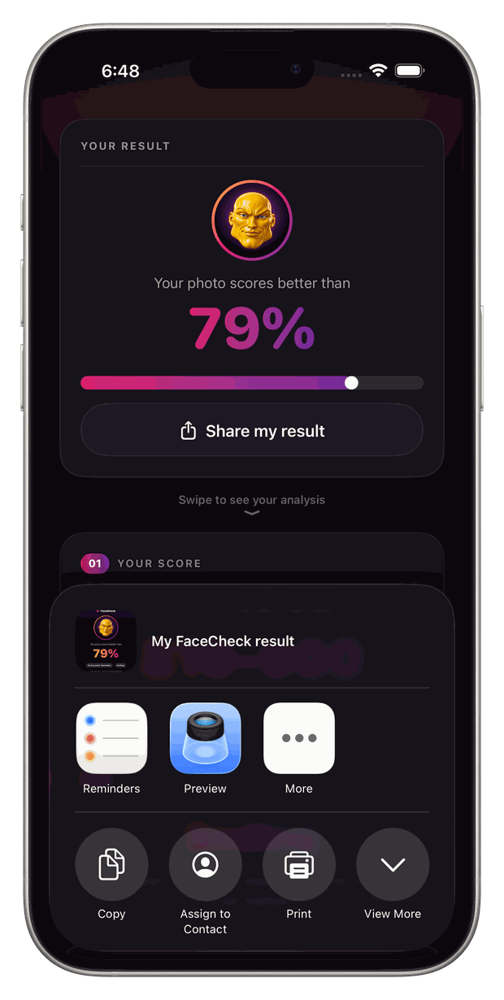
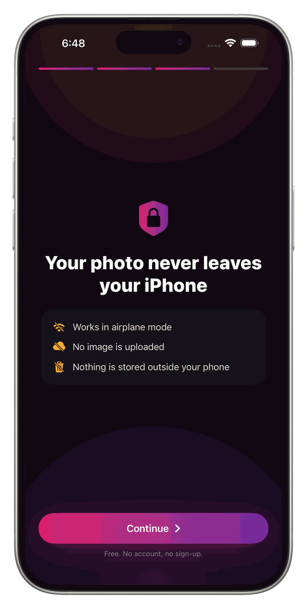

The face symmetry test that never sees the internet.El test de simetría facial que nunca toca internet.
One photo. Your score out of 1000, your strongest feature, your golden-ratio proportions and what your face conveys in two seconds, analyzed entirely on your iPhone. Your photo never leaves your phone.Una foto. Tu puntaje sobre 1000, tu mejor rasgo, tus proporciones áureas y lo que tu cara transmite en dos segundos, analizado entero en tu iPhone. Tu foto nunca sale de tu teléfono.
Free to try · No account, no sign-up · Works in airplane modeGratis para probar · Sin cuenta ni registro · Funciona en modo avión

Know what your photo says.Sabé qué dice tu foto.
In the first two seconds, someone has already decided what you convey. FaceCheck tells you exactly what they're reading, and what to change in the next shot.En los primeros dos segundos, alguien ya decidió qué transmitís. FaceCheck te dice exactamente qué está leyendo, y qué cambiar en la próxima toma.
iPhone · Free to try · Full analysis: one-time purchase from $2.99, no subscriptioniPhone · Gratis para probar · Análisis completo: pago único desde $2.99, sin suscripción
Inside the AppDentro de la app
Nine cards. One honest reading.Nueve tarjetas. Una lectura honesta.
Swipe through your full analysis: score, features, angle, proportions and the points you can gain. Built to lift, not to judge.Deslizá por tu análisis completo: puntaje, rasgos, ángulo, proporciones y los puntos que podés ganar. Hecha para levantar, no para juzgar.

Your scoreTu puntaje
A score out of 1000. For the photo, not the person.Un puntaje sobre 1000. Para la foto, no para la persona.
Symmetry, proportions, capture quality and aesthetics combine into one number, plus where your photo lands next to others. Every point you're missing is something a better shot can win back.Simetría, proporciones, calidad de captura y estética se combinan en un número, más dónde queda tu foto frente a las demás. Cada punto que falta es algo que una mejor toma puede recuperar.

Every feature, measuredCada rasgo, medido
Brows, jawline, gaze, smile: ranked one by one.Cejas, mandíbula, mirada, sonrisa: en ranking, uno por uno.
Seventy-six facial landmarks turn into seven feature bars with a top-percent for each. You always see your strongest feature first, because there always is one.Setenta y seis puntos faciales se convierten en siete barras con un top-percent cada una. Siempre ves primero tu rasgo más fuerte, porque siempre hay uno.

First impressionPrimera impresión
What your face conveys in the first two seconds.Qué transmite tu cara en los primeros dos segundos.
Calm, bright, intense, thoughtful: your expression is measured from real geometry (smile curve, eye openness, brow line) and always described in the positive.Sereno, luminoso, intenso, reflexivo: tu expresión se mide con geometría real (curva de sonrisa, apertura de ojos, línea de cejas) y siempre se describe en positivo.

Your facial signatureTu firma facial
Golden-ratio proportions, described and never graded.Proporciones áureas, descritas y nunca calificadas.
Eye spacing, mouth width, face shape: the measurements that make your face yours and nobody else's. These don't score anything. They tell you your shape, in words.Separación de ojos, ancho de boca, forma del rostro: las medidas que hacen que tu cara sea tuya y de nadie más. No puntúan nada. Te dicen tu forma, en palabras.

Your shot's angleEl ángulo de tu toma
Your angle, read like a portrait photographer would.Tu ángulo, leído como lo leería un retratista.
Straight-on, three-quarter, chin up: every angle says something different, and FaceCheck tells you what yours is saying and why it works.Frontal, tres cuartos, mentón arriba: cada ángulo dice algo distinto, y FaceCheck te cuenta qué está diciendo el tuyo y por qué funciona.

Points you can gainPuntos que podés ganar
Concrete tips. Real points. Next photo, better score.Consejos concretos. Puntos reales. Próxima foto, mejor puntaje.
More front light, a straighter angle, contrast with the background, a slight smile. FaceCheck counts the exact points on the table. Everything improves from the photo; your face is already fine as it is.Más luz de frente, un ángulo más recto, contraste con el fondo, una sonrisa leve. FaceCheck cuenta los puntos exactos sobre la mesa. Todo mejora desde la foto; tu cara ya está bien como está.

Share itCompartilo
One tap to send your result to whoever picks the photo.Un toque para mandarle tu resultado a quien elige la foto.
Your score and your reading go out as a clean card through Messages, Mail or anywhere else you share. The photo itself stays on your phone: only the result travels, and only if you decide to send it.Tu puntaje y tu lectura salen como una tarjeta limpia por Mensajes, Mail o donde compartas. La foto se queda en tu teléfono: solo viaja el resultado, y solo si vos decidís mandarlo.

Private by designPrivada por diseño
Your photo never leaves your iPhone. Ever.Tu foto nunca sale de tu iPhone. Nunca.
No upload, no servers, no account, nothing stored outside your phone. The whole analysis runs on Apple's on-device Vision, so it even works in airplane mode. Try that with a web face scanner.Sin subida, sin servidores, sin cuenta, nada guardado fuera de tu teléfono. Todo el análisis corre con Vision de Apple en el dispositivo, así que funciona hasta en modo avión. Probá eso con un escáner web.
Read the privacy policy →Leer la política de privacidad →How it worksCómo funciona
One photo to your full reading.De una foto a tu lectura completa.
No account, no sign-up, no waiting. The analysis takes seconds because it never travels anywhere.Sin cuenta, sin registro, sin espera. El análisis tarda segundos porque no viaja a ningún lado.
Take a selfieSacá una selfie
Or pick any photo from your library. Front-facing works best.O elegí cualquier foto de tu galería. De frente funciona mejor.
76 landmarks, measured76 puntos, medidos
Symmetry, proportions, angle and expression, read on your iPhone in seconds.Simetría, proporciones, ángulo y expresión, leídos en tu iPhone en segundos.
Swipe your nine cardsDeslizá tus nueve tarjetas
Score, best feature, first impression, angle, signature, points to gain.Puntaje, mejor rasgo, primera impresión, ángulo, firma, puntos a ganar.
Shoot again, score higherVolvé a disparar, subí el puntaje
Apply the tips, analyze the new shot, share your result if you like it.Aplicá los consejos, analizá la nueva toma, compartí tu resultado si te gusta.
FAQ
Questions, answered.Preguntas, respondidas.
What is a face symmetry test?¿Qué es un test de simetría facial?
How does FaceCheck score my photo?¿Cómo puntúa FaceCheck mi foto?
Is my photo uploaded anywhere?¿Mi foto se sube a algún lado?
What is the golden ratio face?¿Qué es la proporción áurea facial?
What is a selfie rating?¿Qué es una calificación de selfie?
Can I improve my score?¿Puedo mejorar mi puntaje?
Does FaceCheck work offline?¿Funciona sin conexión?
How much does FaceCheck cost?¿Cuánto cuesta FaceCheck?
Is FaceCheck accurate?¿FaceCheck es preciso?
What actually makes a photo attractive?¿Qué hace atractiva a una foto?
Your photo speaks before you do.Tu foto habla antes que vos.
Find out what it's saying, without it ever leaving your phone.Descubrí qué está diciendo, sin que salga nunca de tu teléfono.
Download on theDescargar en elApp StoreFree to try · One-time purchase · No subscription, no account, no uploadGratis para probar · Pago único · Sin suscripción, sin cuenta, sin subida